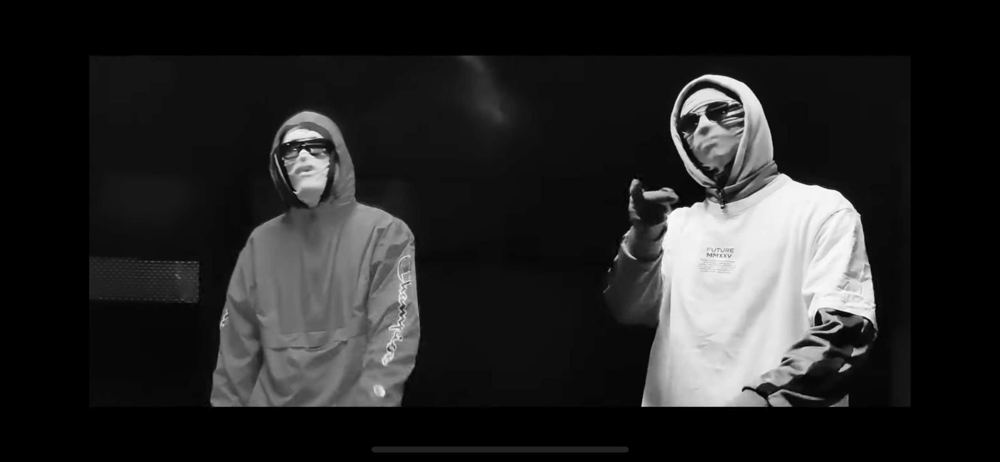

Laperch and Warren come from a parralel universe where every word has an impact,
the ones who rules this alphabetrical world are masters of their language.
At the time when they discovered the true power of rhymes and figures of speeches,
the impact was such that it affected all galaxies around them.
From now on, they can immortalise there « phase » in a card, which is called Phase Shiny.